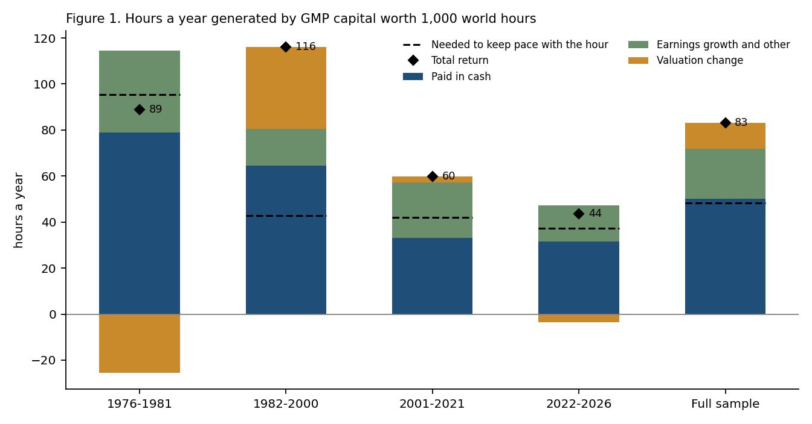
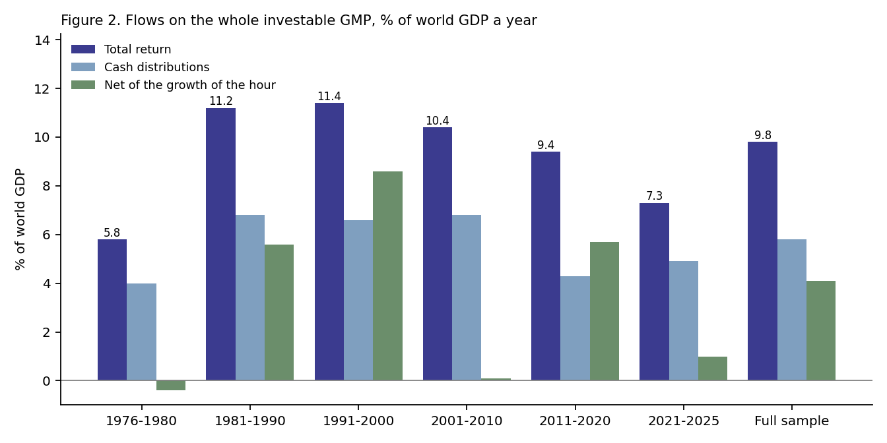
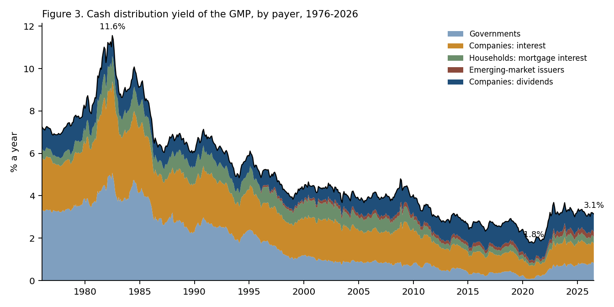
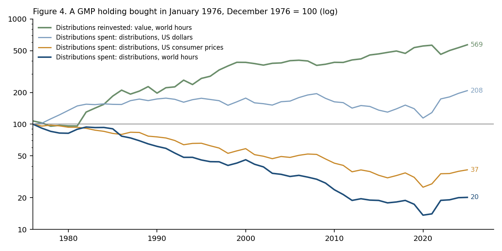
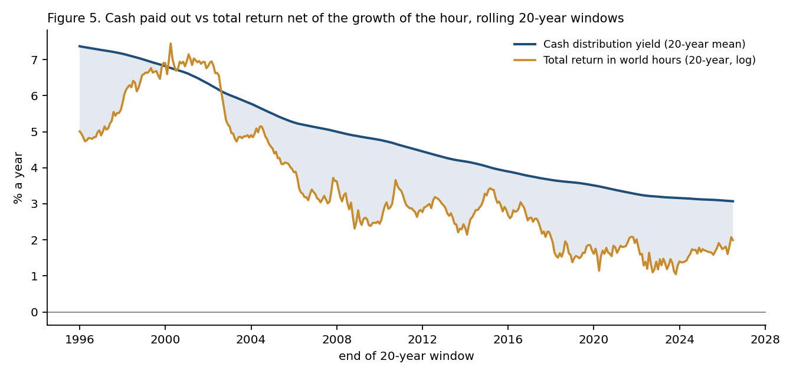
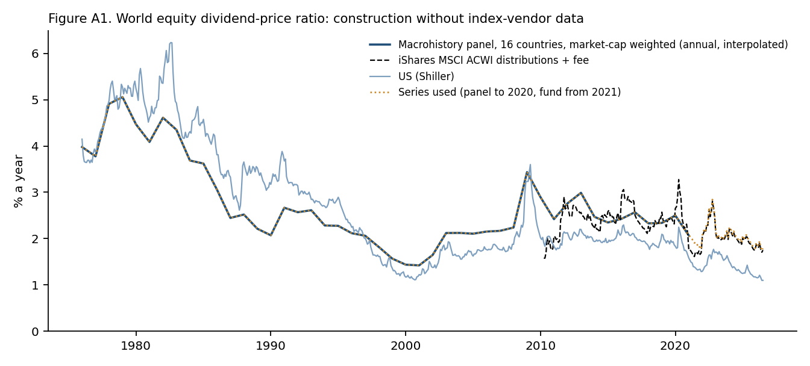

The global market portfolio in dollars and in hours of the world’s work. Research note, draft v1.4, 23 September 2026 (supersedes v1.3; revision history at the end). Keisuke Nakanishi.
This is a review-style note intended for open publication, not a journal submission. All series were built by the author from free public data (FRED, the Jordà–Schularick–Taylor Macrohistory Database, World Bank, Robert Shiller’s online data, Penn World Table, exchange-traded fund prices and distributions as published by Yahoo Finance, and the frozen engine behind the first two notes); no third-party proprietary data is redistributed, no index-vendor data is used, and no tables or figures from other publications are reproduced. Generative AI tools (Claude, Anthropic) were used for drafting, editorial review and writing analysis code, and as a discussion partner in analysis design. The author specified the questions, reviewed and ran all code, checked the outputs against the source data, and is responsible for all results. The analysis is exploratory: it was not pre-registered, and it was run with the results visible. SSRN identifier: 7515699 (doi:10.2139/ssrn.7515699 on approval).
Licence: the text of this note, as published on this site, is CC BY-NC-ND 4.0; any SSRN posting is governed by SSRN’s terms, with copyright retained by the author. The Macrohistory Database is used under its CC BY-NC-SA 4.0 licence (non-commercial, share-alike, cited as its authors require): any series derived from it here — the world dividend–price ratio and everything computed from it — can be released only on those same terms and is not offered under any commercial licence. Fund prices and distributions from Yahoo Finance are used as a public source for the author’s own calculations and are not redistributed, nor are series that reproduce them. Series that depend only on the frozen engine, FRED and World Bank inputs follow the terms of the CC-GMP TR and CC-WH series (CC BY-NC 4.0). See the Licence section on the home page.
The first note in this series built an index of the investable global market portfolio (GMP) and measured what it returned (Nakanishi 2026a). The second built a unit of account — nominal GDP per hour worked across 43 countries, the world hour (Nakanishi 2026b). This note asks of the same portfolio: how many hours of the world’s work does a unit of the world’s capital generate each year, and how much of that does it pay out in cash? It follows the GMP month by month from 1976 to mid-2026, splits its total return into cash distributions, changes in valuation and the rest, and measures each in world hours.
Five results follow.
The world’s capital generated more than the growth of the value of work — a net 2.1 to 3.5% a year, depending on whether valuation changes count. It paid out in cash more than that net gain, about 5.0% a year. That is why what capital generates cannot be read off what it distributes.
Asset returns are usually reported as a single number, total return. For anyone who wants to know how the output of the world is divided between those who own capital and those who work, two splits of that number matter. The first is how much of the return is produced and how much is a change in the price that the market puts on the same claim. The second is how much arrives as cash and how much stays in the price. Measured in dollars both splits look secondary. Measured against something that grows — the value of an hour of the world’s work — they decide whether a holder’s claim on that work rises or falls.
Two literatures bear on this. National accounts divide income between labour and capital and have documented a fall in the labour share since the 1980s (Karabarbounis and Neiman 2014), much of it in housing (Rognlie 2015). Asset-return histories split returns into yield and capital gain, and the capital gain into growth and re-rating (Campbell and Shiller 1988; Arnott and Bernstein 2002; Dimson, Marsh and Staunton 2002; Ibbotson and Chen 2003; Jordà, Knoll, Kuvshinov, Schularick and Taylor 2019). Piketty (2014) framed the comparison of the return on capital, r, with the growth of the economy, g. This note applies those splits to one object — the investable market portfolio at the weights the market sets — and compares r not with g but with the growth of the dollar value of an hour of work. The two are different, as the second note argued (Nakanishi 2026b, Section 4.2): world nominal GDP grows faster than GDP per hour by the growth of hours worked. A reader who wants r − g in Piketty’s sense will find it in the memo rows of Table 5; every other “net” figure in this note is net of the hour, which is the holder’s question (does my claim command more of other people’s time?), not the economy’s (does capital grow faster than output?).
The cash split needs a word of justification, because Miller and Modigliani (1961) showed that a firm’s dividend policy does not change what its owners receive in total: earnings retained or spent on repurchases reach the owner as price, and an owner who wants cash sells. The cash line in this note is therefore a record of how the return was delivered, which is a policy, not of what capital generated, which is Section 4. Both are kept because both are asked about, and because the gap between them turns out to be the note’s most useful number.
Total return and its parts. For each sleeve s of the index, the monthly total return from the frozen backtest engine is split into three parts, each summed over the sleeves at the index’s beginning-of-month weights (reconstituted each January to the previous year-end’s market weights and floating in between; Nakanishi 2026a, Section 5). All parts are in log terms, so they add up to the compound total return.
“Price” is valuation change plus the remainder. “Total return excluding valuation” is cash plus the remainder: the part of the return not due to a change in what the market pays for the same claim.
The world hour. The CC-WH series of Nakanishi (2026b): nominal GDP per hour worked, chained at GDP weights across the panel, in US dollars. The monthly series is the second note’s annual-data version (World Bank GDP, Penn World Table hours, interpolated), which is hard data to June 2025 and extrapolated after; April–June 2026 take the quarterly series’ growth. The level is anchored so that the 2014-Q1 average equals the panel’s dollars per hour in that quarter (US$15.26). Its implied 1976 level (about US$2 an hour) is not a measurement of the 1976 panel average, and no result below depends on it. The series is provisional from July 2025.
Hours generated. Capital worth 1,000 world hours at the start of a year, returning TR in dollars, generates 1,000 × TR hours’ worth of dollars in the year. If the dollar value of an hour grows at g, 1,000 × g of those hours are needed to keep the holding worth 1,000 hours; the net gain is 1,000 × (TR − g). All three are reported, with and without valuation changes.
Cash distribution yield. The GMP’s cash distribution yield is yt = Σs ws,t · ys,t−1.
Two holdings. A holding worth 10,000 world hours in January 1976 is followed under two rules: distributions reinvested (the index itself), and distributions spent (each sleeve grows with its price return only, and the holding is reconstituted each January).
Shares of world output. Any of these flows for the whole investable portfolio, divided by world GDP, equals the share of all hours worked whose output, valued at the average hour, it could buy. No hours data are needed for that; where hours worked are reported (Table 9) they are the Penn World Table panel of the second note.
The sleeve weights and total returns are the rulebook-compliant GMP index of the first note (January 1976 to June 2026), read from the frozen engine’s output files, whose checksums are verified at run time. The weights reproduce the published index return to within 10−16 a month.
| Sleeve | Yield | Source |
|---|---|---|
| Equities | Dividend–price ratio of a sixteen-country panel, weighted by listed market capitalisation, annual to 2020 interpolated to months; from 2021 the ACWI fund’s trailing twelve-month distributions plus expense ratio, shifted by the 2011–2020 panel-minus-fund gap | Macrohistory Database R6 (eq_dp; Jordà et al. 2019, CC BY-NC-SA 4.0); World Bank CM.MKT.LCAP.CD; Yahoo Finance |
| DM government bonds | Ten-year yields of the US, Japan, Germany, the UK, France, Canada and Italy at the sleeve’s fixed country weights, renormalised over the countries with data | FRED (DGS10, OECD IRLTLT01) |
| Investment-grade credit | Average of Moody’s Aaa and Baa yields | FRED |
| Securitised | Half 5-year Treasury, half investment-grade credit (as the return proxy) | FRED |
| EM debt | Baa + constant; constant (+0.12) set so the mean equals the fund’s distributions plus expense ratio, EMB, 2009–2026 | FRED; Yahoo Finance |
| High yield | Baa + constant; constant (+1.43) from HYG on the same basis, 2009–2026 | FRED; Yahoo Finance |
| Inflation-linked | Real 10-year yield (TIPS from 2003; before that the return proxy’s nominal yield minus trailing ten-year inflation) plus trailing twelve-month US CPI inflation, the principal accretion that inflation-linked bonds accrue as income | FRED (DFII10, DGS10, CPIAUCSL) |
| Gold | Zero | — |
Equities without index-vendor data. The world dividend–price ratio is built from the
Macrohistory Database’s annual eq_dp series for sixteen countries (Australia, Belgium, Switzerland,
Germany, Denmark, Spain, Finland, France, the United Kingdom, Italy, Japan, the Netherlands, Norway, Portugal, Sweden
and the United States; Canada and Ireland have no series), each weighted by its World Bank listed market
capitalisation and renormalised over the countries with data. The panel covers 98% of world market
capitalisation in 1976, 91% in 2000 and 69% in 2020; the countries outside it (Canada,
Korea, China, India, Taiwan and others) are assumed to yield the panel average. Year-end values are interpolated to
months. The database ends in 2020; from 2021 the series is the ACWI fund’s trailing twelve-month distributions
plus its expense ratio, shifted by the panel-minus-fund gap on 2011–2020 (+0.04 points) and blended in over
twelve months. Figure A1 shows the construction; the US series alone (Shiller) is a robustness variant.
Valuation. The equity valuation change is the change in the log price–dividend ratio of the same world series. It is world-specific, which the alternatives are not, but it moves when payout policy changes as well as when prices re-rate; Section 4.2 therefore also reports the US trailing price–earnings ratio (S&P Composite price over trailing twelve-month earnings, from Shiller’s monthly data) and the US cyclically adjusted ratio (CAPE). The bond valuation change uses each sleeve’s yield from Table 1 (the real yield for inflation-linked bonds) and a par bond of 10 years’ maturity for government bonds, 8 for EM debt and inflation-linked, 7 for investment-grade credit, 6 for securitised and 5 for high yield.
Aggregate values. The year-end US-dollar value of each sleeve comes from the same weight engine before normalisation: world listed equity capitalisation with the investability filter, BIS debt securities with Federal Reserve, ECB and Bank of Japan holdings netted out, the above-ground gold stock at market prices. Normalised, these values reproduce the published weight history (Nakanishi 2026c) to its rounding. Flows in year y are the average of the year-end values of y−1 and y times the year’s return components; stocks in Table 9 are year-end values. World GDP is the World Bank’s NY.GDP.MKTP.CD.
A cross-check against what index funds actually paid. Table 2 compares each modelled yield with the trailing twelve-month cash distributions of an exchange-traded fund tracking a similar index, grossed up by the fund’s current expense ratio, from the twenty-fourth month after the fund’s launch.
| Sleeve : fund | From | Months | Model | Fund | Correlation |
|---|---|---|---|---|---|
| Equities : ACWI | 2010-03 | 196 | 2.35 | 2.27 | 0.64 |
| Equities : VT | 2010-06 | 193 | 2.35 | 2.21 | 0.61 |
| Government : 0.42 IEF + 0.58 BWX | 2009-10 | 201 | 1.96 | 1.99 | 0.69 |
| Investment-grade : LQD | 2004-07 | 264 | 4.93 | 4.21 | 0.88 |
| Securitised : MBB | 2009-03 | 208 | 3.38 | 2.84 | 0.45 |
| EM debt : EMB | 2009-12 | 199 | 5.13 | 5.13 | 0.65 |
| Inflation-linked : TIP | 2005-12 | 247 | 3.42 | 3.28 | 0.70 |
| High yield : HYG | 2009-04 | 207 | 6.53 | 6.53 | 0.68 |
The EM-debt and high-yield rows match by construction: their yields are Baa plus a constant (+0.12 and +1.43 points) set so that the mean equals the fund’s. The equity gap (about 0.1 points) is within the withholding tax a fund pays on foreign dividends. The modelled government, investment-grade, securitised and inflation-linked yields sit 0 to 0.7 points above what index funds paid, because the model uses market yields while funds pay coupons net of premium amortisation on shorter portfolios. The note’s convention is the market-yield basis: it is consistent with the par-bond total returns from which the engine builds the sleeves, it is defined for the whole sample rather than only for the fund era, and it treats a coupon as what the market prices, not what a particular fund happened to pass through. Section 8 shows the fund-cash basis as a variant. The choice moves return between cash and price and leaves total return unchanged.

| 1976–1981 | 1982–2000 | 2001–2021 | 2022–2026 | 1976–2026 | |
|---|---|---|---|---|---|
| Total return (a) | 89 | 116 | 60 | 44 | 83 |
| — paid in cash | 79 | 64 | 33 | 32 | 50 |
| — price | 10 | 52 | 27 | 12 | 33 |
| —— valuation: world dividend–price ratio | -7 | 18 | -7 | 13 | 4 |
| —— valuation: bond yields | -29 | 18 | 8 | -24 | 5 |
| —— valuation: gold price | 10 | -1 | 2 | 7 | 2 |
| —— earnings growth and other | 36 | 16 | 24 | 16 | 22 |
| Total return excluding valuation (b) | 114 | 80 | 57 | 47 | 72 |
| Needed to keep pace with the hour (c) | 95 | 43 | 42 | 37 | 48 |
| Net gain in hours: (a) − (c) | -6 | 73 | 18 | 6 | 35 |
| Net gain excluding valuation: (b) − (c) | 19 | 38 | 15 | 10 | 24 |
Over the half-century, a unit of the world’s capital generated about 8% of its own value in hours of work each year. Three-fifths came as cash. Of the two-fifths that came as price, a third was the market paying more for the same claims: the world dividend–price ratio fell from 4.0% to 1.8% (the US price–earnings ratio rose from 11.8 to 25.2), bond yields ended lower than they began, and gold rose faster than the hour.
The periods show why a single average can mislead. In 1976–1981 capital generated more before valuation than in any later period (114 hours), but rising yields and falling equity multiples took 26 of them back, and inflation raised the value of the hour so fast that the holder lost ground. In 1982–2000 the same forces reversed: 36 hours of valuation gain on top of 80 earned, against an hour growing at only 4.3% a year, for a net gain of 73. Since 2001 the net gain has been small: 18 hours a year to 2021, and 6 since 2022, when the bond sell-off took 24 hours back.
| Equity valuation measure | Equity valuation, sleeve | Equity valuation, GMP level | All valuation changes | Total return excluding valuation | Net of the hour, excluding valuation |
|---|---|---|---|---|---|
| World dividend-price ratio (baseline) | 1.58 | 0.43 | 1.12 | 7.18 | 2.36 |
| US trailing P/E | 1.62 | 0.37 | 1.06 | 7.24 | 2.42 |
| US CAPE | 2.70 | 0.72 | 1.41 | 6.90 | 2.08 |
Bond and gold valuation changes are the same in all three rows. For the equity sleeve alone the valuation change is 1.6% a year on the world dividend–price ratio, 1.6% on the US trailing P/E and 2.7% on CAPE. In the United States the S&P Composite price rose 8.6% a year from January 1976 to June 2026, earnings 7.1% and dividends 6.2%: the trailing P/E attributes 1.5 points a year of the price rise to re-rating; CAPE, whose ten-year real-earnings denominator lags nominal earnings growth, attributes more; the world dividend–price ratio, which also moves when payout policy changes, gives 1.6. On any of the three, the GMP’s net gain in hours excluding valuation is 2.1–2.4% a year.

| 1976–1980 | 1981–1990 | 1991–2000 | 2001–2010 | 2011–2020 | 2021–2025 | 1976–2025 | |
|---|---|---|---|---|---|---|---|
| Total return | 5.8 | 11.2 | 11.4 | 10.4 | 9.4 | 7.3 | 9.8 |
| — cash | 4.0 | 6.8 | 6.6 | 6.8 | 4.3 | 4.9 | 5.8 |
| — price | 1.7 | 4.4 | 4.8 | 3.7 | 5.1 | 2.4 | 4.0 |
| —— of which valuation change | -0.3 | 2.0 | 4.4 | -1.7 | 3.2 | -1.5 | 1.4 |
| Needed to keep pace with the hour | 6.1 | 5.7 | 2.8 | 10.3 | 3.7 | 6.2 | 5.7 |
| Net of the hour | -0.4 | 5.6 | 8.6 | 0.1 | 5.7 | 1.0 | 4.1 |
| Memo: needed to keep pace with world GDP (g) | 6.9 | 6.6 | 4.8 | 11.4 | 4.0 | 10.7 | 7.1 |
| Memo: net of world GDP growth (r − g) | -1.1 | 4.6 | 6.6 | -0.9 | 5.5 | -3.4 | 2.7 |
Capital is the average of adjacent year-ends; flows are each year’s log return components times that capital. The full-sample valuation change is 1.4% of world GDP a year, so the total return excluding valuation is 8.4% and its net of the hour 2.7%. Decade values of the valuation change swing with the world dividend–price ratio’s own cycle and are shown for completeness only.
The hour is not g. World nominal GDP in dollars grew 5.95% a year over 1976–2025 (log), the dollar value of an hour 4.82%; the difference, 1.13 points, is the growth of hours worked. Keeping pace with world GDP would have taken 7.1% of world GDP a year rather than the 5.7% needed to keep pace with the hour, so net of world GDP growth — r − g applied to the investable portfolio and scaled by its size — the total return was 2.7% of world GDP a year, and 1.3% excluding valuation changes, against 4.1% and 2.7% net of the hour (Table 5, memo rows). A holding that keeps pace with the hour keeps its command over a constant number of hours of work; one that keeps pace with GDP keeps a constant share of world output, which is a higher bar by the growth of the workforce.
Investable capital rose from 58% of world GDP at end-1976 to 195% at end-2025 (Table 9), so the same return on capital is a larger claim on output now than then. Averaged over the half-century, what the world’s investable capital generated each year was equivalent to the output of one hour in ten worked in the world, of which one hour in seventeen was paid out in cash. Net of what was needed to keep holdings constant in hours, the gain was about one hour in twenty-five — or one in forty excluding changes in valuation. The decade figures swing widely, because both capital gains and the growth of the dollar value of an hour do: the net figure was close to zero in 1976–1980 and 2001–2010, 1.0% in 2021–2025, and 5.6–8.6% of world GDP in the three other decades.
This is not the capital share of income. Housing, private businesses and bank deposits are outside the investable GMP; a quarter of the cash in 2025 was interest paid by governments out of taxation (Table 8); and a price gain is a claim on future output, not output already produced.

| 1976 | 1981 | 1990 | 2000 | 2007 | 2012 | 2021 | 2025 | |
|---|---|---|---|---|---|---|---|---|
| Equities | 3.9 | 4.4 | 2.4 | 1.4 | 2.2 | 2.9 | 1.9 | 1.9 |
| DM government bonds | 8.7 | 13.9 | 8.7 | 4.8 | 3.9 | 1.8 | 0.8 | 3.4 |
| Investment-grade credit | 9.1 | 15.1 | 9.8 | 8.0 | 6.0 | 4.3 | 3.0 | 5.7 |
| Securitised | 8.1 | 14.7 | 9.1 | 7.1 | 5.2 | 2.5 | 1.9 | 4.8 |
| EM debt | 9.9 | 16.2 | 10.5 | 8.5 | 6.6 | 5.1 | 3.5 | 6.1 |
| Inflation-linked | 0.0 | 14.7 | 8.9 | 6.4 | 5.1 | 1.6 | 3.8 | 4.6 |
| High yield | 11.2 | 17.5 | 11.8 | 9.8 | 7.9 | 6.4 | 4.8 | 7.4 |
| Gold | 0.0 | 0.0 | 0.0 | 0.0 | 0.0 | 0.0 | 0.0 | 0.0 |
| GMP | 7.2 | 10.2 | 6.7 | 4.5 | 3.9 | 2.9 | 2.0 | 3.2 |
| Memo: equity weight, % | 25 | 27 | 33 | 41 | 40 | 31 | 46 | 44 |
Sleeves carry yields before they hold any weight; they enter the GMP when their weight turns positive (inflation-linked from 1982, high yield from 1985, EM debt from 1996, all at small weights).
The GMP’s cash distribution yield was last above 5% in May 1997. Its minimum, 1.8% in December 2020, came when ten-year yields across the government sleeve averaged under 1% and equities were close to half the portfolio. By June 2026 it had recovered to 3.1%, still below every year before 2009.
| 1981 → 2021 | 2021 → 2025 | 1976 → 2025 | |
|---|---|---|---|
| Change in GMP yield | -8.22 | +1.26 | -3.93 |
| of which: weights | -0.16 | -0.06 | -0.69 |
| of which: sleeve yields | -8.06 | +1.32 | -3.24 |
| Largest yield component | DM government bonds -3.34 | DM government bonds +0.53 | DM government bonds -1.58 |
| Largest weight component | DM government bonds -0.80 | Investment-grade credit -0.04 | DM government bonds -1.03 |
Weights are valued at the average yields of the two dates, yields at the average weights.
The shift from bonds to equities took about 0.7 points off the yield over the full sample, but the forty-year fall is the fall in interest rates: government bonds account for 3.3 of the 8.2 points. The fall in the equity dividend yield, from 4.4% to 1.9%, is the one component that does not mean capital earned less. Dividends are a policy choice. In the United States they grew 1.0 points a year more slowly than earnings over the period, as companies retained more and bought back shares (Boudoukh, Michaely, Richardson and Roberts 2007); that return reached holders through price, and Table 3 counts it there.
| 1976 | 1981 | 1984 | 1990 | 2000 | 2007 | 2012 | 2021 | 2025 | |
|---|---|---|---|---|---|---|---|---|---|
| Governments | 48 | 44 | 46 | 40 | 23 | 20 | 17 | 13 | 25 |
| Companies: interest | 32 | 35 | 33 | 35 | 42 | 38 | 35 | 28 | 30 |
| Companies: dividends | 14 | 10 | 9 | 11 | 14 | 23 | 35 | 46 | 27 |
| Households: mortgage interest | 5 | 10 | 11 | 14 | 18 | 15 | 8 | 7 | 9 |
| Emerging-market issuers | 0 | 0 | 0 | 0 | 3 | 4 | 6 | 6 | 8 |
Central-bank holdings are netted out (coupons paid to central banks are largely remitted to their own treasuries). Gold pays nothing. EM debt mixes sovereign and corporate issuers.
Between 1976 and 2021 the GMP’s cash flow turned from a mainly fiscal one into a mainly corporate one: government yields fell furthest, and from 2008 the three largest central banks bought a large part of the government sleeve. Since 2022 governments’ share has almost doubled. The household row is the part of rent that reaches the investable portfolio: mortgage interest, paid out of housing services, passed through securitised debt.
| 1976 | 1981 | 1984 | 1990 | 2000 | 2007 | 2012 | 2021 | 2025 | |
|---|---|---|---|---|---|---|---|---|---|
| Investable capital, year-end, US$ tn | 3.8 | 7.2 | 10.5 | 24.5 | 56.2 | 111.1 | 122.8 | 175.4 | 231.2 |
| World GDP, US$ tn | 6.6 | 11.9 | 12.5 | 23.0 | 34.0 | 58.6 | 76.1 | 98.8 | 118.3 |
| Capital ÷ GDP, % | 58 | 61 | 84 | 106 | 165 | 190 | 161 | 178 | 195 |
| Cash distributions, US$ tn | 0.26 | 0.79 | 0.97 | 1.69 | 2.38 | 4.31 | 3.44 | 3.65 | 7.26 |
| Cash distributions ÷ GDP, % | 4.0 | 6.6 | 7.8 | 7.3 | 7.0 | 7.4 | 4.5 | 3.7 | 6.1 |
| Cash distributions, bn world hours | 127 | 235 | 301 | 284 | 314 | 343 | 227 | 200 | 345 |
| … per inhabitant, hours | 31 | 52 | 63 | 54 | 51 | 51 | 32 | 25 | 42 |
| … % of hours worked, 43-country panel | — | — | — | — | — | 7.5 | 4.8 | 4.0 | — |
The 2025 capital figure, US$231 trillion at year-end, is of the same order as the institutional estimates reviewed in the first note (US$221 trillion in March 2026 on State Street’s definition). The cash yield fell by two-thirds between 1981 and 2025 while cash distributions as a share of world output moved little (6.6% to 6.1%), because capital more than tripled relative to GDP. In hours, the 2025 distributions were 345 billion hours of world work, about 42 hours for each of the world’s inhabitants; for the years with complete hours data (2005–2023) they were between 3.4% (2020, a year not shown in Table 9) and 7.5% (2007) of all hours worked in the 43-country panel.

| 1976-12 | 1981-12 | 1990-12 | 2000-12 | 2008-12 | 2021-12 | 2026-06 | |
|---|---|---|---|---|---|---|---|
| World hour, US$ (chained) | 2.1 | 3.4 | 5.9 | 7.6 | 12.1 | 18.3 | 21.6 |
| Distributions reinvested: value, world hours | 10,732 | 9,625 | 19,746 | 38,718 | 36,254 | 56,389 | 58,036 |
| Distributions spent: value, world hours | 9,989 | 5,997 | 6,073 | 7,087 | 4,785 | 5,139 | 4,588 |
| Distributions spent: past 12 months, world hours | 709 | 635 | 436 | 326 | 213 | 100 | 142 |
| Distributions spent: US$, 1976 = 100 | 100 | 149 | 174 | 177 | 195 | 129 | 215 |
| Distributions spent: US consumer prices, 1976 = 100 | 100 | 93 | 76 | 58 | 52 | 27 | 37 |
| Distributions spent: world hours, 1976 = 100 | 100 | 90 | 62 | 46 | 30 | 14 | 20 |
The world-hour level in the first row is the chained series anchored to the panel in 2014-Q1 (Section 2); it is US$21.6 in June 2026, whereas the second note’s panel ratio for 2026-Q2 is US$20.7 (Nakanishi 2026b, Section 4.3). The two differ by construction: the chained series holds the country mix fixed period to period, the panel ratio lets hours shift toward lower-output countries. Every ratio in Table 10 uses the chained series.
Reinvested, the holding commanded 5.8 times the hours it cost by mid-2026, a return of 3.5% a year in world hours; its low point, 8,905 hours, came in March 1980. Spent, its distributions rose in dollars (1.6% a year) but fell by 2.0% a year against US consumer prices and by 3.2% a year against the value of the world’s work, and the holding kept 46% of the hours it cost. The difference between the two rules is not a difference in what capital generated — the portfolio is the same — but in whether the price part of the return was left to compound.
| Sleeve | From | Income | Price | of which valuation | Price excluding valuation | World hour | Total excluding valuation − hour |
|---|---|---|---|---|---|---|---|
| Equities | 1976 | 2.7 | 7.8 | 1.6 | 6.2 | 4.8 | +4.1 |
| DM government bonds | 1976 | 5.4 | 0.7 | 0.7 | -0.0 | 4.8 | +0.6 |
| Investment-grade credit | 1976 | 7.5 | 0.1 | 0.4 | -0.3 | 4.8 | +2.4 |
| Securitised | 1976 | 6.5 | -0.1 | 0.3 | -0.4 | 4.8 | +1.2 |
| Gold | 1976 | 0.0 | 6.6 | 6.6 | 0.0 | 4.8 | -4.8 |
| EM debt | 1993 | 6.4 | -0.7 | 0.5 | -1.1 | 3.6 | +1.6 |
| Inflation-linked | 1997 | 3.8 | 0.2 | 0.1 | 0.1 | 3.5 | +0.4 |
| High yield | 1984 | 8.7 | -1.2 | 0.7 | -1.8 | 4.5 | +2.4 |
Income is the arithmetic mean yield; the other columns are log returns, so the columns add only approximately. Equity valuation uses the world dividend–price ratio; the negative bond values of “price excluding valuation” are mainly credit losses and proxy error.
Two of these results follow from the construction rather than from the data, and should be read as such. The bond sleeves are built from par bonds, whose price moves only when their yield does, so their “price excluding valuation” is zero by definition apart from credit losses and proxy error; and gold’s whole price change is classed as valuation, so that gold “generates nothing” is the definition restated. What the data add is the size of the coupon relative to the hour, and the equity row, where nothing is imposed.
Excluding valuation, no bond sleeve gained anything through price in fifty years. A bond’s whole return is its coupon, and in hours the coupon’s first job is to make up for the fall of the currency against the work of the world, 4.8% a year over the sample. What is left after that refund — between 0.4 and 2.4 points a year — is the part of a bond’s coupon that is income in the hours sense. Equities paid a smaller cash yield and grew their price 6.2% a year without re-rating, so what they generated exceeded the hour by 4.1 points a year while they paid out only 2.7. Gold generated nothing: its gain in hours (1.8% a year) was entirely a change in the price the market put on it.

| 1976–1981 | 1982–2000 | 2001–2021 | 2022–2026 | 1976–2026 | |
|---|---|---|---|---|---|
| Cash distribution yield (a) | 8.0 | 6.4 | 3.3 | 3.2 | 5.0 |
| Price return, distributions spent | 1.0 | 5.2 | 2.7 | 1.2 | 3.3 |
| Total return (log) | 8.9 | 11.6 | 6.0 | 4.4 | 8.3 |
| Growth of the world hour in US$ | 9.5 | 4.3 | 4.2 | 3.7 | 4.8 |
| Total return in world hours (b) | -0.6 | 7.3 | 1.8 | 0.6 | 3.5 |
| Cash paid out in excess of (b): (a) − (b) | 8.6 | -0.9 | 1.5 | 2.5 | 1.6 |
The claim that survives from v1.0 is this, and only this: a holder who spends the GMP’s cash distributions spends more than the portfolio’s total return in hours, and so consumes the holding measured in hours. Over the whole sample the excess was 1.6 points a year (2.6 excluding valuation changes). In rolling windows:
This is a statement about a spending rule, not about what capital generates. It says that the cash a portfolio distributes is the wrong guide to what can be spent from it in hours: too much when most of the cash is bond coupons, as in the GMP, and too little for an equity holding whose price did the work.
The investable GMP excludes housing, which is most of the world’s non-financial wealth; rent reaches it only through listed real-estate companies (inside equities) and mortgage interest (Table 8). For reference, the net rental yield on housing in the Macrohistory Database — rent less maintenance, management, insurance and depreciation (Jordà et al. 2019) — weighted by GDP in US dollars across the 16 countries with data, was 5.5% in 1976, 4.3% in 2000 and 2.7% in 2020 — against 7.2%, 4.5% and 1.9% for the GMP’s cash yield in the same years. Neither side is net of taxes: the housing yield is before property taxes, which Jordà et al. (2019) put at under one point a year, and before transaction costs of about 7.7% of value per round trip; the GMP’s cash yield is before withholding and fund costs. The levels are therefore roughly comparable but not equal; the direction is comparable. A version of Table 3 for housing would need house-price and rent series by country and is left for a fourth note, which will take the same unit to the household balance sheet — the home, pension claims and the investable portfolio together, over a working life — where housing is the largest asset and the question of this note (what is generated, what is paid, what is needed to stand still) is asked of a life rather than of a market.
| Variant | Mean 1976–2026, % | 1981, % | 2021, % | Last 12 months, % | Price return, % a year | Distributions in hours, end ÷ start |
|---|---|---|---|---|---|---|
| Baseline | 5.03 | 10.18 | 1.96 | 3.14 | 3.28 | 0.20 |
| Equities: Shiller US only | 5.00 | 10.36 | 1.72 | 2.83 | 3.31 | 0.18 |
| Equities: Shiller US + EFA/EEM/ACWI fund composite (v1.0) | 5.08 | 10.36 | 1.87 | 3.12 | 3.23 | 0.20 |
| Government: seven-year trailing mean yield (running coupon) | 5.12 | 8.94 | 2.04 | 2.83 | 3.12 | 0.18 |
| Inflation-linked: real coupon only, no accretion | 5.00 | 10.18 | 1.87 | 3.08 | 3.31 | 0.20 |
| EM debt: Baa + 2.0 (the return proxy's yield) | 5.06 | 10.18 | 2.03 | 3.21 | 3.25 | 0.20 |
| All credit sleeves 1 point lower | 4.69 | 9.87 | 1.67 | 2.87 | 3.62 | 0.23 |
| Bond sleeves at index-fund cash-distribution levels | 4.83 | 9.97 | 1.89 | 2.88 | 3.48 | 0.21 |
| Weights: two-year lag (from 1977) | 5.00 | 10.39 | 1.98 | 3.25 | 3.17 | 0.23 |
“Distributions in hours, end ÷ start” is the spend-everything holding’s twelve-month distributions in world hours at June 2026 divided by those for 1976.
Every yield variant moves return between cash and price and leaves the total return unchanged, so every total and net figure in Tables 3, 4, 5 and 12 stands. The lowest-yield variant lowers the average cash yield by a third of a point; on that basis about 47 of the 83 hours in Table 3 would be cash rather than 50, and the excess of cash over the total return in hours would be 1.2 points a year rather than 1.6. The valuation measure (Table 4) moves the net gain excluding valuation between 21 and 24 hours per 1,000. The two-year weight lag moves nothing material. The world hour’s own robustness is in the second note: purchasing-power-parity weights move its end-2026 level by about ±3%, and the treatment of China by about ±8%; every “needed” and “net” figure here scales with it.
Stated in the order of their likely importance.
The equity valuation measure mixes re-rating with payout policy. The world dividend–price ratio is the only world-specific measure available without vendor data, but it falls when firms shift from dividends to repurchases as well as when prices re-rate. Section 4.2 bounds the effect with two US earnings-based measures; on all three the net gain excluding valuation is 2.1–2.4% a year. Trailing measures make the adjustment unreliable over windows shorter than a full cycle, which is why decade values of the valuation change are not emphasised.
The equity panel is sixteen countries. Canada, Korea, China, India and Taiwan are assumed to yield the panel average; they were under a tenth of world capitalisation before 2000 and about three-tenths in 2020.
“Earnings growth and other” is a residual. It contains everything not identified as cash or valuation: for equities, the growth of dividends per share after dilution and buybacks; for bonds, credit losses and proxy error; for the portfolio, the compounding difference between arithmetic and log returns.
Yields are modelled, not observed distributions. The bond sleeves use long-maturity market yields, 0 to 0.7 points above index-fund cash distributions after 2004 (Table 2). This affects the split between cash and price, not the total.
Promised yields are not realised income. Credit yields are promised coupons; defaults appear in the price component.
Dividends only, gross of taxes and costs. Buybacks appear in price, not in cash. Withholding and income taxes, fund fees, trading costs and gold’s storage cost are ignored.
The world hour is weakest where it matters most. Before 2014 it is an annual series interpolated to months, its hours data are the weakest input, and the latest quarters are provisional (Nakanishi 2026b, Sections 8–9). The growth of the hour, 4.8% a year in dollars, is subtracted in every net figure.
A price gain is not output. Tables 3 and 5 express total returns in hours of work. A capital gain is a claim on future output whose value the market sets; converting it to hours says what it could buy, not what was produced.
Aggregate values inherit the index engine’s assumptions. Central-bank holdings are netted for three institutions only; the high-yield and inflation-linked shares of their blocks are fixed ratios; capital covers the investable portfolio only.
Nominal, dollar-based, one history. All figures are in US dollars; the world hour is a nominal unit that contains exchange rates. The rolling windows overlap heavily — the 367 twenty-year windows contain about two and a half independent ones — so shares of windows are historical frequencies, not probabilities.
Exploratory analysis. The questions, the decompositions and the variants were chosen with the results visible, and versions 1.1 and 1.2 were revised after review of the earlier versions. Nothing here was pre-registered.
This note is general information and a research record addressed to no particular reader. It does not recommend any security, fund or transaction, does not suggest a spending or withdrawal rate for any person, does not suggest timing, and is not individualised advice. The exchange-traded funds named in Section 3 are used only as public sources of distribution data. The author is not a regulated investment adviser or licensed financial services provider and does not respond to individual requests for advice. Historical and simulated figures do not indicate future results; backtest figures are hypothetical and are not the results of any actual account. No representation is made as to the accuracy or completeness of the information, and the author accepts no liability for any loss arising from its use. All tables are the author’s own calculations from public data; no figures from other publications are reproduced. Index and fund names are trademarks of their owners. Nothing here is legal or tax advice.
The author resides in Japan. This note provides general information to an unspecified audience and does not constitute investment advisory business under the Financial Instruments and Exchange Act of Japan.
v1.4 (23 September 2026). Corrects Section 7: the Macrohistory Database housing rental yield is net of running costs and depreciation (Jordà et al. 2019), not gross as v1.3 stated; the section now says what is and is not deducted on each side. No figure in Tables 1–13 changes.
v1.3 (20 September 2026). Adds the comparison with world GDP growth as distinct from the growth of the hour (Table 5 memo rows, Section 4.3); states where results follow from the construction rather than from the data (Section 6.2); reconciles the chained world-hour level with the panel level of the second note (Table 10); corrects the licence statement for series derived from the Macrohistory Database (CC BY-NC-SA 4.0) and from fund distribution records; moves this history from the front of the note. No figure in Tables 1–13 changes.
v1.0–v1.2 (17 September 2026). Version 1.0 measured what the world’s capital pays — cash dividends and coupons — and drew its headline conclusions from that alone. That left out the part of the return that equities deliver through price, which is most of it, and it let a cash-only yield stand for what capital generates. Version 1.1 put total return first, split it into cash, valuation change and the rest (Section 4), and kept the cash analysis as the account of how the return is delivered (Sections 5–6). Version 1.2 makes three further changes, none of which alters a conclusion. First, the world equity dividend yield no longer uses index-vendor data: from 2001 to 2020 v1.1 used MSCI index levels, whose terms of use do not clearly permit derived series in a publication; v1.2 uses the Macrohistory Database’s dividend–price ratios for sixteen countries, weighted by World Bank market capitalisation, and the ACWI fund’s distributions from 2021. At every date for which v1.1 reported a value, the two series differ by less than 0.1 points (Appendix). Second, the equity valuation measure is now the world dividend–price ratio built for Table 1, which is world-specific, with the US trailing price–earnings ratio and CAPE as alternatives; v1.1 had the US ratio as baseline. Third, the aggregate table (Table 9) reports year-end capital; v1.1 reported the average of adjacent year-ends under a year-end label, which understated the 2025 figure by $18 trillion. A data gap was corrected in v1.1: US consumer prices for October and November 2025 were not published, and v1.0 left the inflation-linked sleeve’s yield undefined in those months instead of interpolating.
Arnott, R. D. and Bernstein, P. L. (2002). “What Risk Premium Is ‘Normal’?” Financial Analysts Journal, 58(2), 64–85.
Boudoukh, J., Michaely, R., Richardson, M. and Roberts, M. R. (2007). “On the Importance of Measuring Payout Yield: Implications for Empirical Asset Pricing.” Journal of Finance, 62(2), 877–915.
Campbell, J. Y. and Shiller, R. J. (1988). “The Dividend-Price Ratio and Expectations of Future Dividends and Discount Factors.” Review of Financial Studies, 1(3), 195–228.
Dimson, E., Marsh, P. and Staunton, M. (2002). Triumph of the Optimists: 101 Years of Global Investment Returns. Princeton University Press.
Federal Reserve Bank of St. Louis. FRED: DGS10, GS5, AAA, BAA, DFII10, CPIAUCSL; OECD long-term interest rates (IRLTLT01) for Japan, Germany, the UK, France, Canada and Italy; Penn World Table employment and hours series. Accessed September 2026.
Feenstra, R. C., Inklaar, R. and Timmer, M. P. (2015). “The Next Generation of the Penn World Table.” American Economic Review, 105(10), 3150–3182.
Ibbotson, R. G. and Chen, P. (2003). “Long-Run Stock Returns: Participating in the Real Economy.” Financial Analysts Journal, 59(1), 88–98.
Jordà, Ò., Knoll, K., Kuvshinov, D., Schularick, M. and Taylor, A. M. (2019). “The Rate of Return on Everything, 1870–2015.” Quarterly Journal of Economics, 134(3), 1225–1298.
Jordà, Ò., Schularick, M. and Taylor, A. M. (2017). “Macrofinancial History and the New Business Cycle Facts.” In M. Eichenbaum and J. A. Parker (eds.), NBER Macroeconomics Annual 2016, vol. 31. University of Chicago Press. Jordà–Schularick–Taylor Macrohistory Database, release 6, accessed September 2026.
Karabarbounis, L. and Neiman, B. (2014). “The Global Decline of the Labor Share.” Quarterly Journal of Economics, 129(1), 61–103.
Miller, M. H. and Modigliani, F. (1961). “Dividend Policy, Growth, and the Valuation of Shares.” Journal of Business, 34(4), 411–433.
Nakanishi, K. (2026a). “Owning the Market as It Is: A Half-Century Look at the Global Market Portfolio.” Research note, SSRN. doi:10.2139/ssrn.7394599.
Nakanishi, K. (2026b). “Measuring Assets in Hours of the World’s Work: A Labour-Time Numeraire from Public Data.” Research note, SSRN. doi:10.2139/ssrn.7445203.
Nakanishi, K. (2026c). Global Market Portfolio Weight History, 1976–2026, v1.0.0. Zenodo. doi:10.5281/zenodo.22151403 (all versions: doi:10.5281/zenodo.22151402).
Piketty, T. (2014). Capital in the Twenty-First Century. Harvard University Press.
Rognlie, M. (2015). “Deciphering the Fall and Rise in the Net Capital Share: Accumulation or Scarcity?” Brookings Papers on Economic Activity, Spring 2015, 1–69.
Shiller, R. J. Online Data: US stock prices, dividends, earnings and CAPE, monthly (ie_data.xls). Accessed September 2026.
World Bank. World Development Indicators: market capitalisation of listed domestic companies (CM.MKT.LCAP.CD), by country and world; GDP, world (NY.GDP.MKTP.CD); population. Accessed September 2026.
Yahoo Finance. Monthly prices and distributions of ACWI, VT, IEF, BWX, LQD, MBB, EMB, TIP and HYG. Accessed September 2026.
| File | Content |
|---|---|
jst_equity_dy.py | World equity dividend–price ratio from the Macrohistory panel and the ACWI fund (Table 1, Figure A1) |
build_v2.py | Floating weights, yields and the fund cross-check, the three-way decomposition, hours generated, flows as a share of world GDP, payers, holdings, sleeves, rolling windows, rent, robustness, Figures 1–5 |
build_paper_v2.py | All tables and every number quoted in the text, generated from output_v2/ |
output_v2/build_log.json | Input checksums, reproduction check, constants, rolling-window statistics |
output_v2/*.csv | Monthly components, sleeve yields, flows, holdings, tables |
Inputs from earlier notes (SHA-256), verified at run time:
67b88001829194240f33fe24b9eb7f198235ea076c1956317c4cbbd3173b6397 monthly_returns_corrected.csv
5008fbf33d85807290d9d18ef2ccf77c26c83584c2ecb359b2b9b0d4632aa708 four_series_returns_corrected.csv
8d4aee2d7071e5a33283d6876eafc225c22e2b77e2c5abe3cc0f757b47261009 b61/pit_weights_v2.csv
9e77d22d4d71802a3e8c6af447b9a5cc79b738ef3b145a77a43d9d655ca4d790 world_yardsticks_usd.csv
2144f282c817a1df164d929b0a4f4d77efb9c61c87d3717bd116418ab85baf40 world_q_yardsticks_usd.csv
893baf577a76f297aa46dad27b2c530c6defcbc69b5dd3efe772774fe3f9eed9 world_q_gdp_per_hour_level_usd.csvRun: python3 jst_equity_dy.py → python3 build_v2.py → python3 build_paper_v2.py. Raw
files (FRED, Shiller, Macrohistory Database, World Bank, fund histories) are in data/. No index-vendor
data is used or redistributed. The equity dividend–price series built here differs from the v1.1 series that used
MSCI index levels by less than 0.1 points at every date v1.1 reported (annual averages for 1976, 1981, 1990, 2000,
2007, 2012, 2021 and 2025).
